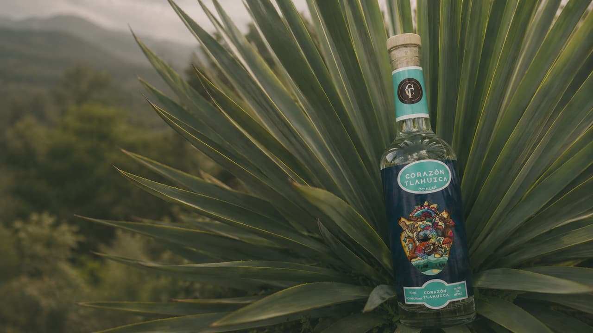
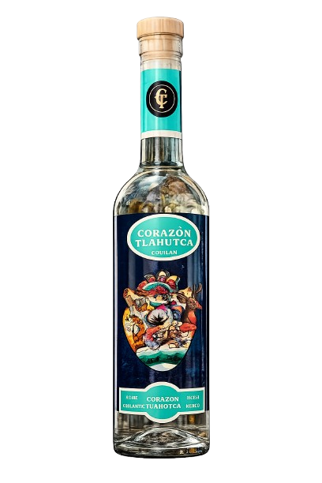

Para continuar confirma que eres mayor de edad.

Ocuilan · Agave Rochacantha
Cada botella de Corazón Tlahuica representa el encuentro entre naturaleza, tradición y el tiempo necesario para crear un mezcal digno de compartirse.
No es solo una bebida. Es una experiencia que comienza mucho antes del primer sorbo.
Rochacantha de Ocuilan, sin atajos
Identidad, orgullo y origen
Al ritmo de los ciclos del tiempo
Expresiones

Notas sutiles de humo, equilibradas con matices minerales y de vegetación silvestre: el microclima de su origen, embotellado.
ComprarUna expresión selecta nacida de la paciencia y del respeto por los métodos que definen nuestra herencia.
ApartarEl origen
Hay rincones de nuestra tierra donde el paisaje dicta el compás de las horas. Lejos de la prisa del mundo moderno, la naturaleza y los ciclos del tiempo se confunden en un abrazo silencioso para forjar el carácter de lo auténtico.
Corazón Tlahuica nace de ese respeto por el origen. Del orgullo por el trabajo artesanal que transforma con paciencia los frutos de la tierra en arte líquido, resguardando en cada botella un pacto con nuestras raíces.
Entendemos que la excelencia no admite atajos. Creemos en el valor de esperar, en la sabiduría de las manos expertas y en la honestidad de un destilado transparente que rinde tributo a su entorno. No buscamos encajar en el mercado masivo: existimos para resguardar el destilado bien hecho.